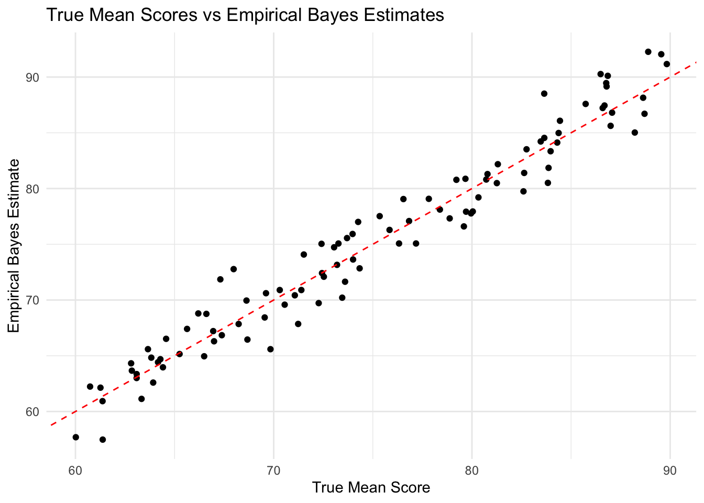

set.seed(123)
set.seed(123)
num_students <- 100
num_exams <- 5
true_mean_scores <- runif(num_students, min = 60, max = 90)
exam_scores <- sapply(true_mean_scores, function(mu) rnorm(num_exams, mean = mu, sd = 5))
exam_data <- data.frame(StudentID = 1:num_students, true_mean_score = true_mean_scores, exam_scores)Chapter 6. Empirical Bayes
Historical Context
The chapter on Empirical Bayes is situated within the broader historical context of statistical inference and Bayesian methods.
The term “empirical Bayes” was coined by Robbins in 1956, coinciding with the formulation of what is now known as formula (6.7). This marked a pivotal moment in statistical inference, as it introduced a practical approach for estimation when explicit prior information was unavailable. Robbins’ contribution laid the groundwork for empirical Bayes methods, which rely on observed data rather than predefined priors, making them particularly useful in scenarios where prior knowledge is scarce or difficult to specify.
Around the same time, Good and Toulmin proposed a solution to the missing-species problem, acknowledging the influence of Alan Turing on their ideas. This collaborative effort highlighted the interdisciplinary nature of statistical research and the importance of cross-disciplinary insights in advancing statistical methodologies.
Empirical Bayes estimates, such as those mentioned in formula (6.25), demonstrate the applicability of this approach in real-world scenarios. These estimates are not contingent on assumptions of independence among the observed variables but are sensitive to such assumptions, emphasizing the need for careful consideration of underlying assumptions in empirical Bayes analyses.
Corbet’s pioneering efforts in data collection, despite the challenges of pre-computer times, underscored the importance of reliable data in statistical inference. Today, statisticians often work with vast databases to extract meaningful insights, reflecting the evolution of data collection and analysis practices.
In subsequent years, Efron and Thisted applied empirical Bayes methods to analyze Shakespearean word counts, using linear programming techniques to estimate Shakespeare’s unseen vocabulary. Their work shed light on literary analysis and authorship attribution in historical texts. Similarly, empirical Bayes techniques were applied to analyze the potentially Shakespearean poem “Shall I die?” recovered in 1985, providing insights into authorship attribution in Elizabethan literature.
The historical context provided by these references highlights the interdisciplinary nature of statistical research and the practical significance of empirical Bayes methods in addressing diverse problems across various domains.
Empirical Bayes methods emerged as a pragmatic solution to the challenges of applying Bayesian inference in real-world settings where prior information may be scarce or difficult to specify. The empirical Bayes approach gained traction in the mid-20th century, particularly in fields such as biostatistics, genetics, and econometrics, where large datasets became increasingly available.
Bradley Efron and Trevor Hastie’s work on Empirical Bayes, as discussed in the book “Computer Age Statistical Inference,” reflects this historical trajectory. Efron and Hastie are prominent statisticians known for their contributions to empirical Bayes methods and their applications in various fields. Their work builds upon earlier developments in Bayesian statistics and empirical Bayes, offering practical tools and techniques for leveraging large datasets to make inference in a Bayesian framework.
6.1 Robbins’ Formula
Main Points:
Robbins’ formula is a method used to estimate the expected number of claims or events based on past observations, without requiring prior knowledge of the underlying distribution. It is particularly relevant in scenarios where there is a large dataset of similar cases, making it feasible to derive Bayesian information empirically.
The formula is derived from Bayes’ rule, which is a fundamental concept in Bayesian statistics. Bayes’ rule allows us to update our beliefs about a parameter (in this case, the expected number of claims) based on observed data. In the context of Robbins’ formula, the parameter of interest is the expected number of claims made by a policyholder in a given year.
The key idea behind Robbins’ formula is to use the observed claim counts and their proportions to estimate the expected claim rate for policyholders. This estimation is done by considering the Poisson distribution, which is commonly used to model the number of events occurring in a fixed interval of time or space.
The formula itself takes the form:
[ E{|x} = (x+1) ]
Where: - ( E{|x} ) is the estimated expected claim rate for a policyholder who has made ( x ) claims in the past year. - ( f(x) ) represents the proportion of policyholders who made ( x ) claims in the past year.
By applying this formula, insurance companies or other organizations can estimate the expected claim rate for individual policyholders based on their past claims history, even without having prior knowledge of the underlying distribution of claim rates.
- Robbins’ formula is considered significant because it provides a practical and effective method for making predictions in situations where traditional Bayesian methods may not be feasible due to a lack of prior information. Its empirical nature allows it to leverage the information contained within large datasets, making it a valuable tool for decision-making and risk assessment.
Comments and Notes:
- Robbins’ formula provides a practical method for estimating future claim rates even without prior knowledge of the underlying distribution.
- The empirical nature of the formula underscores its relevance in the context of large datasets, where Bayesian principles can be applied effectively.
- The formula’s simplicity and effectiveness make it a valuable tool for insurance companies and other organizations dealing with similar prediction problems.
Questions:
1. How does Robbins’ formula overcome the challenge of not having prior knowledge of the distribution of claim rates?
2. What are the assumptions underlying the Poisson distribution in modeling claim rates, and how do they affect the accuracy of the estimates?
3. How does Robbins’ formula handle situations with small count numbers, as mentioned in the text?
4. What are the advantages and limitations of using a parametric approach, as described in the later part of the sub-chapter, compared to the empirical approach presented earlier?
6.2 The Missing-Species Problem
Main Points:
- Background and Problem Statement:
- The sub-chapter introduces the “missing-species problem” through the context of Alexander Corbet’s butterfly trapping data. Corbet’s question was about estimating the number of new species he would capture if he continued trapping for an additional period.
- Fisher’s Solution:
- R. A. Fisher provided a solution to this problem, known as Fisher’s solution, which involves estimating the expected number of new species based on the observed trapping data.
- Fisher’s key assumption is that the trapping rate for each species remains constant over time.
- Formula and Calculation:
- The expected number of new species ( E(t) ) is calculated using an integral equation, considering the probability of a species being unseen in the initial period but seen in the new period.
- The formula for ( E(t) ) is expressed as: [ E(t) = S (_0^{} e^{-} (1 - e^{-t}) g() , d) ] Where:
- ( S ) is the total number of species, seen or unseen.
- ( ) represents the trapping rate parameter for each species.
- ( g() ) is the empirical density, representing the probability distribution of the trapping rates.
- ( t ) is the duration of the new trapping period.
- Example:
- An example is provided using Corbet’s butterfly trapping data. If Corbet specified ( t = 1/2 ), then the expected number of new species ( E(t) ) can be calculated using the formula.
- The formula yields an estimate of the expected number of new species based on the observed trapping data.
Example Calculation: - Given the butterfly trapping data, let’s assume ( t = 1/2 ) year for the new trapping period. - We can use the observed trapping counts ( y_x ) from Table 6.2 to calculate the expected number of new species using Fisher’s formula. - Substituting the values into the formula, we can calculate ( E(1/2) ), which represents the expected number of new species for a trapping period of ( 1/2 ) year.
Comments and Notes:
- Fisher’s solution provides a practical and data-driven method for estimating the number of new species or items in various scenarios, beyond just butterfly trapping data.
- The formula incorporates the observed data and assumes a constant trapping rate for each species over time.
- While the formula provides useful estimates, it’s important to consider its limitations, particularly its stability for larger time periods and the assumptions made about the trapping process.
Questions:
How does Fisher’s formula incorporate the probability of a species being unseen in the initial period but seen in the new period?
How does Fisher’s solution address the challenge of estimating the number of new species without prior knowledge of the underlying distribution?
What are some potential limitations or assumptions of Fisher’s solution, and how might they affect the accuracy of the estimates?
6.3 A Medical Example
Main Points:
- Introduction to the Medical Study:
- The sub-chapter discusses a medical study involving cancer surgery, specifically the removal of surrounding lymph nodes along with the primary target.
- The study comprises 844 surgeries, each reporting the number of nodes removed ((n_k)) and the number of nodes found positive ((x_k)).
- The ratios of positive nodes to total nodes removed ((p_k = )) are described in a histogram, with a large proportion of them being zero.
- Binomial Distribution Model:
- The study assumes that each patient has a true probability ((_k)) of a node being positive, and the results of nodal examination occur independently of each other.
- The number of positive nodes ((x_k)) follows a binomial distribution ((x_k (n_k, _k))), where (n_k) represents the total number of nodes removed for patient (k).
- Bayesian Analysis and Empirical Bayes Approach:
- A Bayesian analysis typically begins with the assumption of a prior density ((g())) for the (_k) values.
- However, due to the lack of prior knowledge about (g()), an empirical Bayes approach is adopted.
- In the empirical Bayes approach for this study, it’s assumed that the logarithm of (g()) follows a fourth-degree polynomial in ().
- Parameter Estimation:
- The parameter vector (= (_1, _2, _3, _4)) determines (g()) based on the assumed polynomial form.
- The maximum likelihood estimate of () is obtained by maximizing the likelihood function.
- Clinical Implications:
- The study aims to assess the prognostic significance of the positive node ratios ((p_k)) in determining the need for follow-up therapy.
- A threshold of () is used to indicate poor prognosis, suggesting more aggressive follow-up therapy for patients with higher positive node ratios.
Example and Clinical Interpretation: - The example provided in the sub-chapter involves analyzing the positive node ratios for individual patients and assessing their prognosis based on the estimated probabilities ((_k)). - By comparing the estimated probabilities to the threshold of (0.50), patients are categorized into different risk groups, informing the need for follow-up therapy.
Comments and Notes:
- The medical example demonstrates the application of empirical Bayes methods in analyzing complex datasets, where traditional Bayesian analysis may not be feasible due to a lack of prior information.
- The study highlights the importance of statistical methods in informing clinical decision-making and risk assessment in medical practice.
Potential Questions:
- How does the binomial distribution model capture the probability of a node being positive in cancer surgery?
- How do the estimated probabilities ((_k)) inform clinical decisions regarding follow-up therapy for cancer patients?
- What are some potential challenges or limitations associated with the empirical Bayes approach in medical studies, and how can they be addressed?
6.4 Indirect Evidence 1
Main Points:
- Definition of Statistical Argument:
- A statistical argument involves combining many small pieces of evidence, often contradictory, to produce an overall conclusion.
- In clinical trials, for example, the efficacy of a new drug is not assessed based on curing every patient but on accumulating convincing evidence of its effectiveness over a group.
- Direct vs. Indirect Evidence:
- Direct statistical evidence involves each subject’s success or failure directly impacting the question of interest, as seen in clinical trials.
- Direct evidence, interpreted using frequentist methods, was dominant in the 20th century and is strongly linked to scientific objectivity.
- Bayesian Inference and Indirect Evidence:
- Bayesian inference provides a theoretical framework for incorporating indirect evidence, such as a doctor’s prior experience, represented by a prior density (g()).
- Asserting a prior density (g()) suggests the relevance of past data to the current case.
- Empirical Bayes Approach:
- Empirical Bayes removes the need for a prior density by relying on the relevance of “other” cases in a large dataset.
- For example, in estimating a patient’s success rate in a clinical trial, empirical Bayes uses the success rates of other patients as a basis for estimation.
- The sub-chapter illustrates the empirical Bayes estimate calculation for a patient in a clinical trial.
- Shift towards Indirect Evidence:
- Changes in 21st-century statistics are largely demand-driven, responding to massive datasets enabled by modern scientific equipment.
- Philosophically, there has been an increased acceptance of indirect evidence, particularly in empirical Bayes and objective Bayes applications.
- False discovery rates, discussed in Chapter 15, represent a significant shift towards using indirect evidence in hypothesis testing.
Comments and Notes:
- The sub-chapter highlights the importance of indirect evidence in statistical inference, particularly in contexts where direct evidence may be limited or impractical.
- It discusses the philosophical and methodological changes in statistics, emphasizing the increasing acceptance of indirect evidence-driven approaches.
Potential Questions:
- How does the definition of a statistical argument emphasize the role of combining contradictory evidence?
- What role does Bayesian inference play in incorporating indirect evidence, and how does it differ from frequentist methods?
- How does the empirical Bayes approach address the challenge of estimating parameters without relying on explicit prior information?
Implications For Statistical Practice
The material covered in the chapter on empirical Bayes has several implications for statistical practice:
Handling Limited Prior Information: Empirical Bayes methods provide a practical approach for estimation when explicit prior information is limited or difficult to specify. This is particularly relevant in fields where prior knowledge is scarce or uncertain, allowing statisticians to make informed decisions based on observed data.
Utilizing Large Datasets: With the increasing availability of large datasets, empirical Bayes methods offer a way to leverage this wealth of information for estimation and inference. By analyzing patterns and trends within these datasets, statisticians can derive valuable insights and make more accurate predictions.
Addressing Missing Data Problems: Empirical Bayes techniques can help address missing data problems by using information from similar cases to impute missing values. This allows for more robust analyses and reduces the impact of missing data on statistical inference.
Improving Decision Making: By incorporating empirical Bayes methods into statistical practice, decision makers can make more informed choices based on a better understanding of uncertainty and variability in the data. This can lead to more effective strategies and interventions in various fields, from healthcare to finance.
Enhancing Predictive Modeling: Empirical Bayes approaches can improve the performance of predictive models by incorporating information from similar observations. This allows for more accurate predictions and better decision support in areas such as risk assessment and forecasting.
Overall, the material in the chapter underscores the practical utility of empirical Bayes methods in statistical practice, offering valuable tools and techniques for estimation, inference, and decision making in a wide range of applications.
Example for Empirical Bayes
For a simple example to illustrate empirical Bayes estimation using a dataset of exam scores. We’ll assume that we have exam scores from multiple students and want to estimate the true mean score for each student based on their observed scores and the overall distribution of scores.
Now, let’s implement empirical Bayes estimation to estimate the true mean score for each student:
library(MASS)
library(dplyr)
Attaching package: 'dplyr'The following object is masked from 'package:MASS':
selectThe following objects are masked from 'package:stats':
filter, lagThe following objects are masked from 'package:base':
intersect, setdiff, setequal, union# Function to compute empirical Bayes estimate
empirical_bayes <- function(scores) {
mean(scores)
}
# Apply empirical Bayes estimation for each student
exam_data <- exam_data %>%
mutate(empirical_bayes_estimate = rowMeans(t(exam_scores)))
# Create a ggplot to visualize true mean scores vs empirical Bayes estimates
library(ggplot2)
ggplot(exam_data, aes(x = true_mean_score, y = empirical_bayes_estimate)) +
geom_point() +
geom_abline(intercept = 0, slope = 1, color = "red", linetype = "dashed") +
labs(x = "True Mean Score", y = "Empirical Bayes Estimate",
title = "True Mean Scores vs Empirical Bayes Estimates") +
theme_minimal()
In this example, we first simulate a dataset with 100 students and 5 exam scores for each student. We then define a function empirical_bayes to perform empirical Bayes estimation for a given set of exam scores. This function fits a normal distribution to the observed scores and extracts the estimated mean as the empirical Bayes estimate.
Finally, we apply the empirical_bayes function to each student’s exam scores using sapply, and store the resulting empirical Bayes estimates in a new column empirical_bayes_estimate in the dataset.
References
Bradley Efron, Trevor Hastie (2016). Computer Age Statistical Inference: Algorithms, Evidence, and Data Science. Cambridge University Press.
Bayes, T. (1763). An essay towards solving a problem in the doctrine of chances. Philosophical Transactions of the Royal Society of London, 53, 370-418.
Laplace, P. S. (1814). Essai philosophique sur les probabilités.
Efron, B. (2010). Large-scale inference: empirical Bayes methods for estimation, testing, and prediction. Cambridge University Press.
Hastie, T., Tibshirani, R., & Friedman, J. (2009). The elements of statistical learning: data mining, inference, and prediction. Springer Science & Business Media.
Chat GPT.